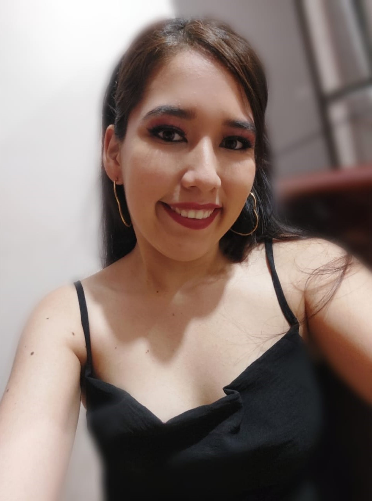

Curriculum Viate

DATOS PERSONALES
Nombres completos:
Melanie Ambar Panta Palas
Cédula:
0955387865
Fecha de Nacimiento:
22 de Diciembre del 2001
Dirección:
Duran - Cdla. El Recreo 5ta Etapa Mz. 507 Villa 02
Teléfono:
043-908273
Móvil:
0969402515
Correo electrónico:
melpanta10@hotmail.com
FORMACIÓN ACADÉMICA
Estudios primarios:
Escuela Centro de estudios Kyrios
2004 - 2013
Escuela Fiscal Pedro Carbo
2013 - 2014
Estudios Secundarios:
Unidad Educativa Rita Lecumberri
2014 - 2020
Estudios Superiores:
Universidad de Guayaquil
Cuarto Semestre de Carrera
2021 - Presente
HABILIDADES
Trabajo bajo presión
Creatividad
Trabajo en equipo
Liderazgo
Conocimientos básicos de excel
Manejo del tiempo
Adaptabilidad
REFERENCIAS
Lcda. Pamela Palas
Econ. Edgar Macías